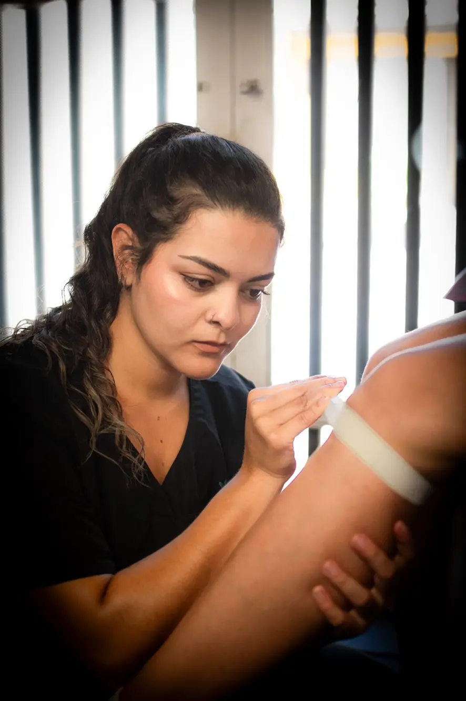

Escucha activa
Tus metas y experiencias ayudan a orientar el trabajo.
Nosotros
Rema lleva la fisioterapia al espacio donde transcurre tu vida, para que el proceso tenga sentido dentro y fuera de la sesión.

Nuestra manera de acompañar
Una recuperación sostenible necesita objetivos que conecten con tu día a día. La escucha, la educación sobre el movimiento y la práctica progresiva son parte de un proceso construido en colaboración contigo.
La atención está dirigida por profesionales de fisioterapia. Cada intervención debe partir de una valoración individual y respetar tus necesidades, preferencias y ritmo.
Lo que guía el proceso
Tus metas y experiencias ayudan a orientar el trabajo.
Entender el proceso te permite tomar parte en tus decisiones.
La práctica se adapta a tu capacidad y evoluciona contigo.
Antes de empezar
El plan del sitio menciona Bello, Medellín y Envigado como zonas de interés. La disponibilidad depende de tu dirección y debe confirmarse con Rema antes de coordinar.
Ten a mano la información relevante sobre tu motivo de consulta y las indicaciones médicas que tengas. El fisioterapeuta te explicará cómo prepararte según tu situación.
No. La información del sitio es general; solo una valoración individual permite decidir qué abordaje puede ser apropiado.